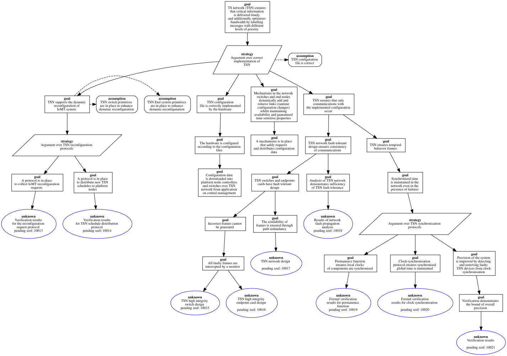

platform_plane_TS_network_g0_14
Pattern 'platform_plane_TS_network'
P : platform_plane:platform = platform(iomt_platform1,[node(node1,[memory(ram,[family(ram),size(16),alignment(4)]),memory(disk,[family(disk),size(1024)])],[processor(cpu0,[family(cpu),frequency('2GHz'),schedule(100)]),processor(cpu1,[family(cpu),frequency('2GHz'),schedule(100)]),processor(cpu2,[family(cpu),frequency('2GHz'),schedule(100)]),processor(cpu3,[family(cpu),frequency('2GHz'),schedule(100)])],[device(es,[port(pt1,[type(pt1)])],[family(tsn_card),schedule(100)])],[],[os(linux)]),node(node2,[memory(ram,[family(ram),size(16),alignment(1)]),memory(disk,[family(disk),size(1024)])],[processor(cpu0,[family(cpu),frequency('2GHz'),schedule(100)]),processor(cpu1,[family(cpu),frequency('2GHz'),schedule(100)]),processor(cpu2,[family(cpu),frequency('2GHz'),schedule(100)]),processor(cpu3,[family(cpu),frequency('2GHz'),schedule(100)])],[device(es,[port(pt1,[type(pt1)])],[family(tsn_card),schedule(100)])],[],[os(linux)])],[switch(sw0,[port(pt1,[]),port(pt2,[])],[])],[phylink(f1,[node1,es,pt1],[sw0,pt1],[length('2m'),media(copper)]),phylink(f2,[node2,es,pt1],[sw0,pt2],[length('2m'),media(copper)])],[specfilename(...)])
GSN Representation

Error Log